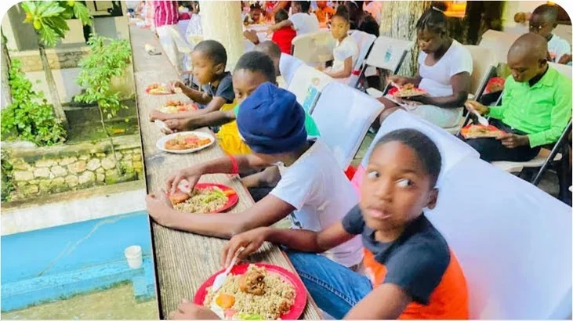
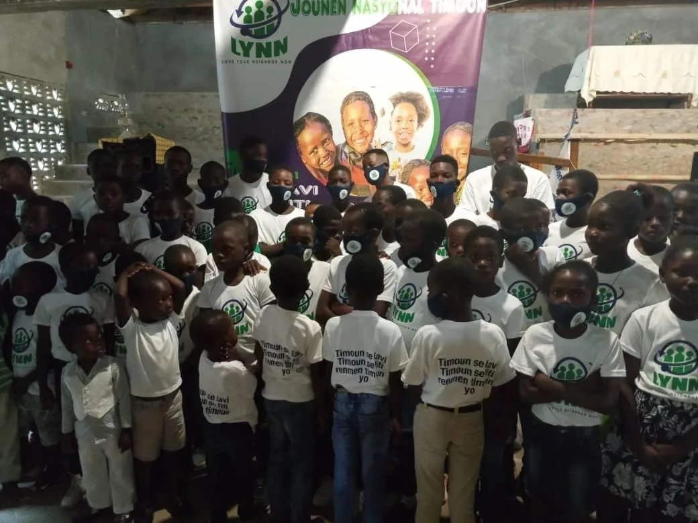
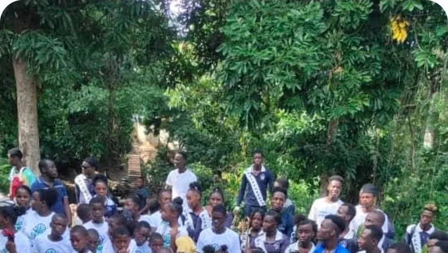
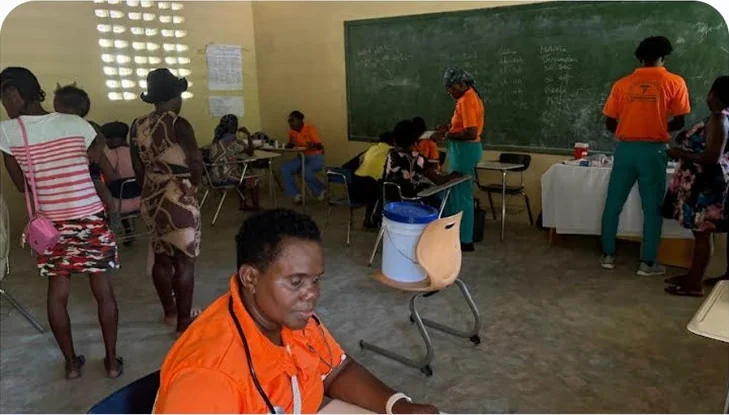

Community Food Project
Nutritional meals three times a week for approximately 40 children in Haiti, plus school fees for an average of 25 children a year. Food justice is community justice.

Love Your Neighbor Now
Serving with compassion. Creating opportunities. Building stronger, self-sustaining communities.
Who we are
Love Your Neighbor Now (LYNN) is a faith-based nonprofit committed to empowering underserved individuals, families, and communities through spiritual, educational, social, health, and economic development.
We believe every person has God-given potential and deserves the opportunity to learn, grow, heal, lead, and thrive.
LYNN was incorporated by a group of engaged community members who saw a simple, stubborn problem: families needed help that already existed nearby, and nobody was connecting them to it.
Since then we have served hot meals to almost 50 children every week, hosted health fairs, run focus groups with parents to help build stronger family units, and served over 125 children on Children's International Day. We have collaborated with well-respected community organisations including Shalom Village Joly and Église Chrétienne Amour.
Our incorporating members are fully dedicated and bring extensive experience serving the community.

Through compassionate service, education, resources, and opportunities, LYNN addresses immediate needs while equipping people with the tools and support needed to build stronger families, healthier communities, and a sustainable future.
To see individuals, families, and communities transformed and empowered to become self-sustaining, resilient, and productive, creating a lasting positive impact in the lives of others.
What guides us
Serve with compassion, dignity and respect.
Put faith into action through prayer and service.
Use our time, talents and resources to meet needs.
Help people recognize their strengths and possibilities.
Build lasting change together.
Lead with honesty, responsibility and professionalism.
Every gift goes to the programs we implement. LYNN is run by members and volunteers who live in the communities they serve.
What we do
LYNN addresses immediate needs while equipping people with the tools and support to build stronger families and healthier communities.
Creating opportunities for children and young people to learn, develop skills, and become leaders.
Supporting families through education, resources, relationships, and community connections.
Connecting individuals and families with health education, wellness resources, and supportive services.
Building financial literacy, entrepreneurship, career readiness, and pathways toward self-sufficiency.
Responding to community needs through food assistance, outreach, missions, school support, and essential resources.
Putting Christian faith into action through compassion, service, prayer, and meaningful partnerships.
Our programs

Nutritional meals three times a week for approximately 40 children in Haiti, plus school fees for an average of 25 children a year. Food justice is community justice.

Trade-school skills classes for local youth, and sponsorship for three nursing students in Cap-Haïtien working toward a profession.

Financial assistance so local people can start their own business — the difference between a hand-out and a livelihood that lasts.

Health fairs, parent focus groups, and the everyday work of introducing people who need services to the people already providing them.
This school year, 80 children and 10 adolescents have asked LYNN for help — with school, and with completing a technical trade so they can earn.
Where members serve
Where we serve
Haiti & Marie Claire Heureuse School
LYNN is committed to serving communities in Haiti and proudly administers and supports École Marie Claire Heureuse de Milot in Milot, Haiti.
Our work focuses on education, student support, nutrition, technology, school development, humanitarian service, and community empowerment.
Our approach
On the ground
Every photograph below is a real LYNN event, grouped and named so you can see exactly which program it belongs to.
Our people
LYNN is led by a group of committed and passionate individuals who share the organization's values and who work daily to uphold its promise.
Be part of the change
Your time, resources, skills, and compassion can help create lasting change.
A gift feeds a child this week, not next quarter. Your contribution supports our staff in Haiti and keeps the mission running.
Give nowHealth fairs, back-to-school drives, focus groups and the day-to-day. Tell us what you are good at and we will find the fit.
Volunteer with usChurches, schools, businesses and community groups. We already work alongside Shalom Village Joly and Église Chrétienne Amour — there is room for more.
Start a partnershipChoose an amount. Every dollar is put to work in the programs above.
Contact
A nonprofit is only as strong as the community holding it up. Tell us how you want to help and we will come back to you.
Eighty children and ten adolescents have asked us for help this school year. We would like to say yes to all of them.
Donate Now